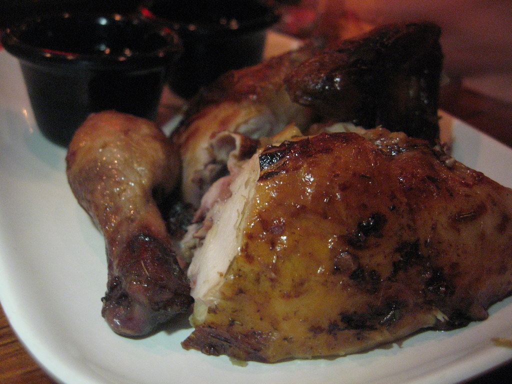

Thai BBQ Chicken

Description
Marinade today cook tommorow kinda recipe.
Classic Thai comfort food, or maybe not.
Ingredients
The Marinade:
- White peppercorns, black pepper is fine too.
- Toasted coriander seeds
- Lemongrass, bottom half only, thinly sliced.
- Garlic
- Fish suace
- Thai black soy sauce or dark soy sauce
- Sugar
- Neutral oil
The Dipping Sauce - Nam Jim Jaew:
Nam jim jeaw is a tart, spicy dipping sauce that goes with all of our barbecue meats. The sharp flavours cut the richness of grilled meats.
- Tamarind paste
- Palm Sugar
- Fish sauce
- Lime juice
- Chili flakes
- Shallots
- Shallots
- Green onion
- Cilantro
- Toasted rice powder